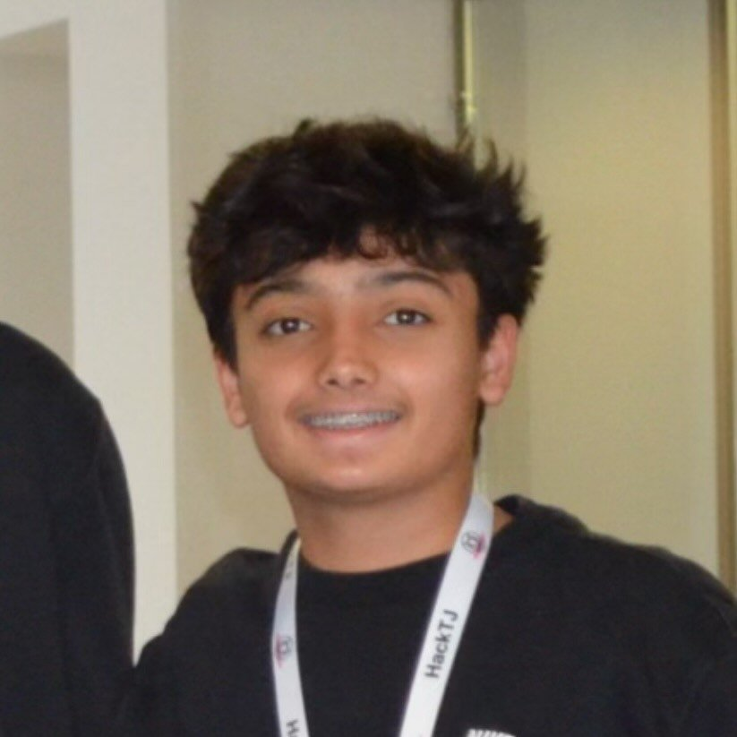

Anay Shekhar
world models & interpretability
about
i'm someone who just wants to know what's actually happening underneath the model, not just that it works. that curiosity is what pulled me into machine learning in the first place, and it's why i build things from scratch instead of importing them. if i can't explain why a gradient flows the way it does or why a representation looks the way it does, i don't feel like i understand it yet.
right now that curiosity is pointed at world models and interpretability, specifically how models learn to represent physical reality instead of just predicting text, and what's actually going on inside them when they do.
currently exploring:
- joint embedding predictive architectures (jepa)
- latent space prediction vs pixel reconstruction
- probing what these models represent internally
projects
fern.ai
built a mobile app that acts as an ai powered hospital bill auditor, which won best mobile hack at hacktj. the system let you take a photo or pdf upload of a bill, extracts the medical codes and pricing, validates them against a cms database using rag, flags any incorrect or fraudulent charges, and then writes up a formal dispute letter.
pokepy
wrote a language model from scratch that generates names based on pokémon data. i built the underlying math entirely using numpy so i could get a deep understanding of weight initialization, activation stability, and how gradients flow through a network without relying on deep learning frameworks.
future
looking ahead, i want to keep asking whether models build real internal representations of the world, or just get good at faking it. i'd rather spend time figuring out what's actually happening inside a system than chase whatever's trending.
- representation learning — building a small jepa style model from scratch to see how a context encoder and a target encoder learn to predict masked regions in latent space.
- mechanistic interpretability — writing probes to check what a model's latent space actually encodes, like whether it captures object permanence or spatial structure, instead of assuming it does.
- evaluation — digging into where current world models fail on physical reasoning benchmarks, and what that failure actually reveals about the gap between representation and understanding.
contact
if you're curious about the same things, world models, interpretability, what's actually going on inside these systems, feel free to reach out.
email: anay.shekhar10@gmail.com
code: github.com/AnayShekhar
network: linkedin.com/in/AnayShekhar